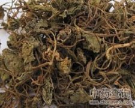

青天葵

拼音
Qīnɡ Tiān Kuí
别名
天葵、独脚天葵、猪乸耳、磨地沙、珍珠叶、半边伞、坠千斤、山米子、铁帽子、小胖药、提心吊胆
来源
兰科芋兰属植物毛唇芋兰Nervilia fordii （Hance）Schlecht.，以全草或块茎入药。全年可采，鲜用或晒干。
生境分布
生于阴湿的石山疏林下，或田边。分布广东、广西等地。产广西、广东等地。
药材特点
多年生宿根小草本，高约10～27厘米，全株光滑无毛。地下茎作不规则的球状，肉质，白色，径约1厘米。茎极短或无。叶根生；多为1片，2片的罕见，呈圆形，长4.5～6厘米，宽约8厘米，先端短尖，基部心脏形，全缘或略呈波状，绿色，叶脉明显，自叶基向叶缘伸出，数约20，侧脉纵横交错而呈网状；叶柄圆柱形，长约8厘米，粗约3毫米，有多数纵行条纹，接近地面部呈青紫红色。花梗长约20～30厘米，节间有退化鳞片包覆，鳞片有淡紫红色脉纹；总状花序；花冠下垂，不整齐，5片，披针形，唇瓣1片，白色，有紫红色脉纹，内面被绒毛，雄蕊与雌蕊合生成合蕊柱。果实椭圆形，多数。花期春季。
性状
干燥叶呈灰褐色至灰绿色，卷成团粒状，叶柄扁平，有纵向条纹。广东产的商品，叶中多裹有球茎。以干燥、叶小、有香味者佳。
性味
苦、甘，平。
功能主治
清肺止咳，健脾消积，镇静止痛，清热解毒，散瘀消肿。用于肺结核咳嗽咯血，支气管炎，小儿疳积，小儿肺炎，精神病，跌打肿痛，口腔炎，急性喉头炎，疮毒。
用法用量
1～2钱，外用适量，新鲜块茎捣烂敷患处。
化学成分
无化学成分数据
药理作用
1：无药理作用数据
摘录
《全国中草药汇编》